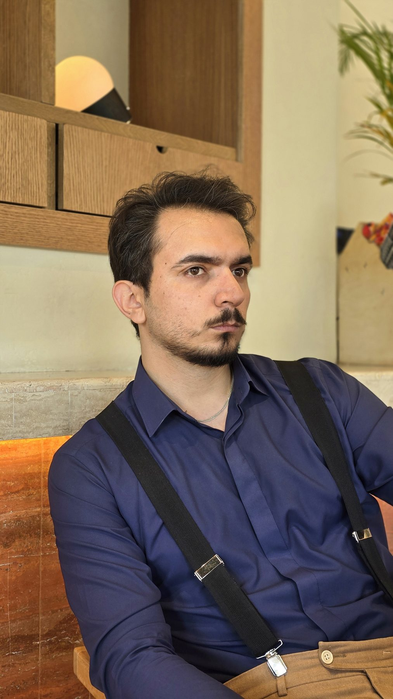

About
Twelve years of making things move.

I am Mohammad Hashemi.
I have spent twelve years in content production. I am the founder of HB Studio, a seven-person team that covers digital marketing, Instagram management, editing, motion graphics, design and development.
I worked in Tehran for years and now I am based in Mashhad. Work that starts with a camera usually ends in After Effects, and increasingly, in a generative model that I direct like a crew.
My rule comes from an older friend: whatever you do, be the best at it. Mop the floor so it shines.
The road so far
First wedding shoots
I pick up a camera and learn the job the hard way, on wedding days where there is no second take.
From editing to motion
Editing leads me to After Effects. A months-long course in Tehran, then years of self-study, take me to professional motion work.
Staff editor in Tehran
Years inside a production team: hundreds of educational films, Instagram content, animation and motion.
Exhibitions, branches and brands
Work widens to exhibitions, seminars, brand openings and the first jewelry and gold projects.
Back to Mashhad
I move home to Mashhad and spend years inside a gold and jewelry company, shaping its films, content and motion.
HB Studio is founded
A studio of my own, then a team of seven: marketing, Instagram, editing, motion, design and development.
AI films enter the pipeline
Image-to-video joins the camera: jewelry and watch films directed with the same discipline as a real set.
Building my own tools
Plugins and panels for After Effects and Premiere, and a studio with room for filming, jewelry photography and podcasts.
Tools I master
Premiere, After Effects, Resolve, Photoshop, Blender, Cinema 4D, and the AI models I direct. Drawn as monograms, not logos.